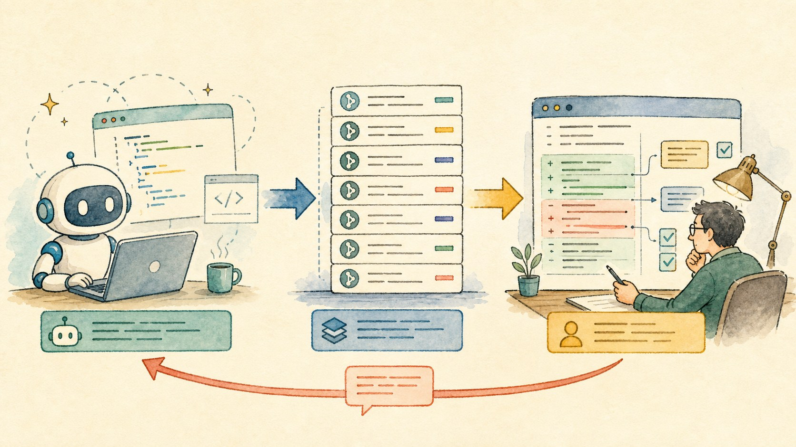
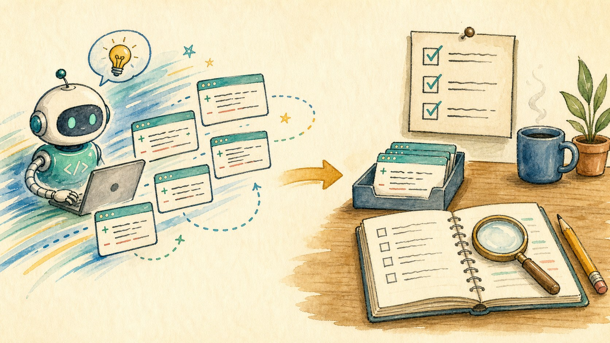
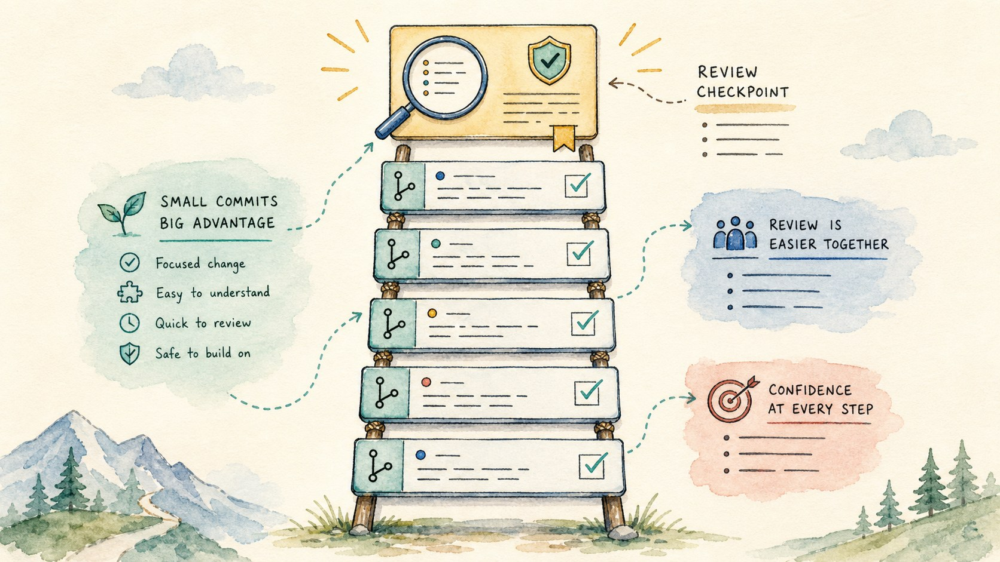
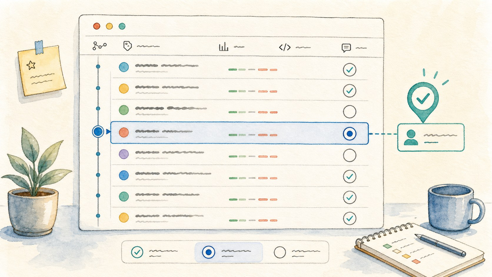
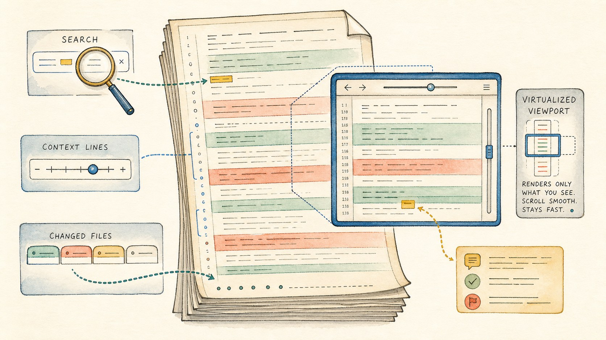
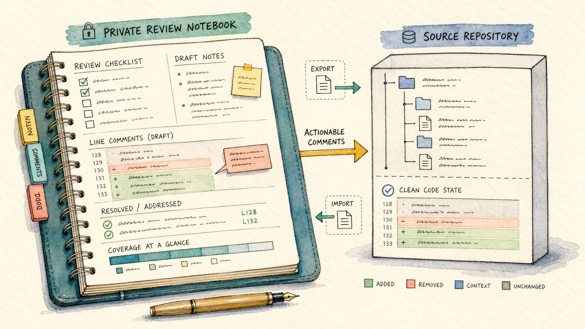
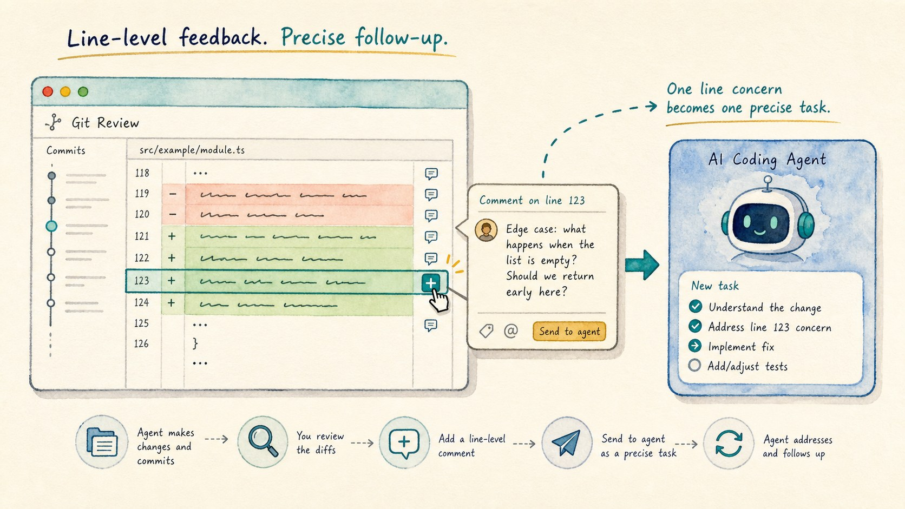

A CoCalc-AI field guide for careful builders
Reviewing Agent Commits in CoCalc-AI
Let Codex move fast in small commits, then slow the project down with a real review pass: every commit visible, every line commentable, and every question routed back to the agent with the exact diff context.

Agent work can feel like a flow state. Codex reads, edits, tests, commits, and keeps going. That is useful, but it should not replace human review.
CoCalc-AI's git review tool gives the flow a second phase. First, let the agent produce understandable commits. Later, open the review drawer and inspect the sequence carefully, with the same kind of discipline you would bring to a pull request.
This is the antidote to vibe coding
The dangerous version of agent work is not that Codex writes code. The dangerous version is that nobody reconstructs what changed and why.
The review tool makes the work auditable. It turns a long chat session into a finite checklist of commits, files, hunks, comments, and follow-up turns.

Ask for commits while the work is fresh
Small commits are the raw material for a good review. Ask Codex to commit after a coherent change, with a message that explains the durable reason for the change.
Please make the fix, run the focused check, commit the change, and write a commit body that explains the behavior and the validation.
Later, each commit becomes a review unit. That is much easier to audit than one enormous final diff.

Review every commit, not just the last one
The drawer shows the repository log, commit details, changed files, and the patch. Use Only unreviewed to keep your place. Move newer and older through the sequence until nothing important is unvisited.
The Reviewed checkbox is deliberately private state. It is your coverage marker, not a claim that the agent or the team has accepted the change.

Large diffs need navigation, not heroics
Search inside the diff and jump between matches.
Change context lines when a hunk needs more surrounding code.
Use the changed-file list to move straight to the risky files.
Virtualized rendering keeps big reviews usable.
Use the review drawer as the scale tool
The drawer is built for large patches: file sections are virtualized, very long files reveal more lines on demand, scroll position is restored, and Find in diff can expand the rendered range to reach a match.
It also knows how to open the changed file. When something looks suspicious in the patch, jump from the review to the source and ask Codex to inspect the surrounding implementation.

Keep your review state separate from the code
Review notes, reviewed checkboxes, inline comments, and resolved status are account-scoped review state. They are saved for your workflow, can be exported or imported, and are not automatically sent to the agent.
That separation is important. You can keep private doubts, mark your own progress, and send only the draft inline comments that should become agent work.
- Keep private review notes private.
- Send only actionable draft comments to Codex.
- Review the follow-up commit before marking the original done.

The healthy rhythm is fast, then slow. Let the agent create momentum. Then use git review to recover intent, ask precise questions, and make sure the final project is something a careful human actually understands.
Turn a line concern into an agent task
In the patch, use the inline + buttons to attach a draft comment to a specific file, side, line, hunk, and snippet. Write the question as if you were reviewing a pull request.
Then send the draft inline comments to the agent. CoCalc packages them with the exact
git show --no-color -U...target, so Codex receives precise review instructions instead of a vague complaint.